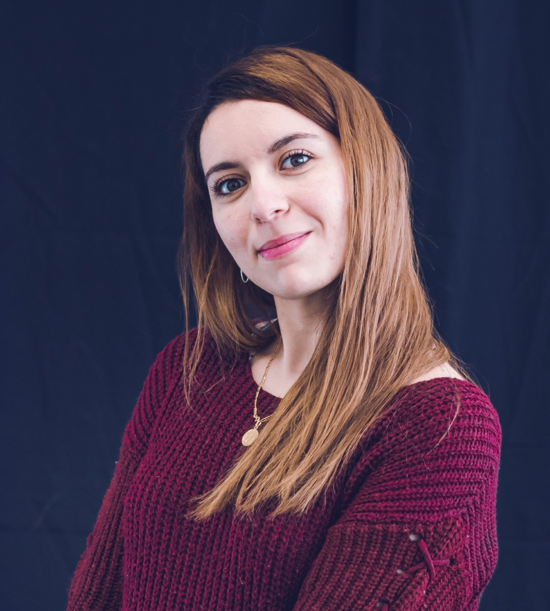

01 / PLASMA PHYSICS
High-speed plasma imaging
Detecting, tracking, and analyzing turbulent structures in fusion plasmas from ultrafast experimental image sequences, including data acquired at up to one million frames per second.
I am an AI/ML research engineer with a Ph.D. in plasma physics and machine vision. My work spans high-speed scientific imaging, turbulence detection and tracking, physics-informed learning for magnetic sensing, 3D reconstruction, and efficient deep-learning models.

My research combines physical understanding with machine learning to extract reliable information from complex measurements. I have worked with high-speed imaging of plasma phenomena, sensor-based inverse problems, computer vision, and 3D reconstruction. I am interested in bridging scientific algorithm development and practical AI systems.
Established research areas and recent engineering work, from experimental plasma diagnostics to sensor-based learning.
Detecting, tracking, and analyzing turbulent structures in fusion plasmas from ultrafast experimental image sequences, including data acquired at up to one million frames per second.
Estimating magnetic-sensor position and orientation from measured magnetic fields using physics-informed neural networks and simulation/experiment comparisons.
Building 3D processing pipelines for orthosis prototyping and investigating teacher–student distillation to improve the efficiency of YOLO-based detectors.
Selected research and engineering projects. Some underlying datasets and implementations are not publicly available; descriptions below focus on methods and outcomes that can be shared.
Developed supervised learning and image-processing methods for detecting and following evolving turbulent structures in high-speed plasma images, supporting quantitative studies of plasma dynamics.
Developed physics-informed learning workflows to infer sensor position and orientation from magnetic measurements, with CUDA-accelerated training, experiment tracking in MLflow, and comparison with Radia simulations.
Designed preprocessing, segmentation, surface and mesh reconstruction, and quality-control steps for custom orthosis prototyping. Used OpenCV, scikit-image, Open3D, CloudCompare, and ParaView.
Investigated teacher–student knowledge distillation for compact YOLO models under edge and embedded deployment constraints.
Processed experimental diagnostic datasets and contributed to interpretation and validation of analysis results at the Institute of Plasma Physics in Prague.
Explored supervised anatomical landmark extraction from 3D meshes and contrast-based autofocus optimization in Huawei Tech Arena challenges.
Selected peer-reviewed articles, collaborative research, and my doctoral thesis. The submitted manuscript is clearly distinguished from published work.
Selected awards, invited presentations, and conference contributions.
Recognition for doctoral research, as listed in my academic CV.
Invited seminar at PIIM Laboratory, Aix-Marseille University, May 2026.
Collaborative contribution at IEEE NEWCAS 2025.
Collaborative contribution on efficient microscopy detection, listed for IDA 2026.
Contribution to the APS Division of Plasma Physics Meeting, Spokane, 2022.
Research presentations and participation in plasma physics and AI-in-health scientific events in France and Switzerland.
Interested in collaborations involving scientific machine learning, sensor data, computer vision, and physics-informed AI.